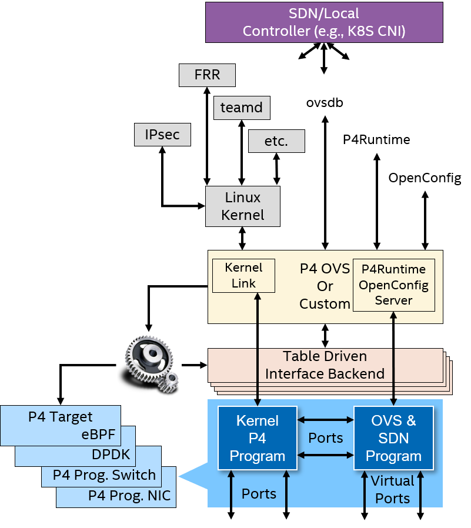
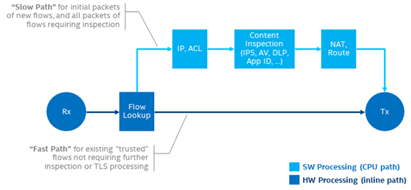
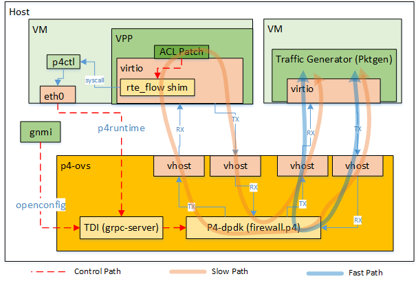

Firewall Function Acceleration
An inline network service is a function inserted into the datapath of a networking device (could be software, IPU or switch datapath). The inline networked device needs to be a full participant in the network (by either peering with the networking at L3 or having ingress/egress ports that the inline network controller can use to re-direct traffic through it). In this recipe this is accomplished by building on top of the Infrastructure Networking model through the gNMI OpenConfig and p4Runtime APIs. The initial Infrastructure Networking model is based on the P4-OVS recipe. It is also possible to build this on top of SONiC which has recently been expanded to also support a P4 (P4 Integrated Network Stack (PINS)) feature add.
The P4 OVS or SONiC is used to peer with the rest of the network, and then P4Runtime and OpenConfig are used by the control plane implementing the inline network service to insert the pipeline into the networking datapath. The P4 compiler will inform the control plane if its P4 pipeline dataplane requirements are supported by the device. The OpenConfig interface can be queried to test if the required configuration schema can be supported by the device as well.

In this document we provide the recipe firewall use case inline acceleration for Xeon platform only. As explained in the IPDK P4-OVS recipe, only the virtio-net virtual device type is supported to the tenant instance.
Example Firewall flow-assist use case
VPP executes as a network function on host/VM where IPDK provides I/O connectivity and a network acceleration service. The network function directly configures and manages flows in the IPDK for inline networking domain. The selection criteria for acceleration could be lifetime of flow (e.g., long-lived flows) or features required (e.g., flow not requiring inspection).

The above figure shows the slow path and fast path scenario for typical firewall use case where network function can be accelerated for IP/ACL functions, content inspections, NAT, route operations etc. In this document we provide the example implementation which accelerates the IP/ACL functions only.
Example Implementation Details
Figure below shows the detailed architecture of example firewall flow-assist scenario. The P4-OVS comes with tools like gnmi-cli and p4ctl which uses OpenConfig and P4Runtime interfaces.

Using gnmi-cli Over OpenConfig, several virtual ports (e.g., vhost) are created which are attached to the port devices connected to the VMs for the datapath connectivity. The tenant instance (VPP application as firewall) loads the corresponding driver (e.g., virtio) for that device and can send/receive traffic.
A firewall.p4 program defines the dataplane to be used with P4-OVS. A firewall.p4info file also generated by compiling the firewall.p4 and is consumed by the virtio driver within host/VM to be aware about the pipeline tables and actions. The control application writes some default rules in the pipeline to determine the direction of the traffic.
In the above figure, 2 VMs are used where one VM is running pktgen application as traffic generator and second VM is running VPP application firewall tenant. In the ingress path, upon receiving the first packet from pktgen, the pipeline uses longest prefix match and determines the direction of the packet. Since there is no flow was programmed from the tenant (VPP as firewall workload), the packet is considered as an exception packet and forwarded to the tenant. The tenant then determines validity of the flow and program a rule to P4-OVS and send the packet back to the P4-OVS.
The driver (virtio in this example) in tenant implements DPDK rte_flow API to program the flow. Upon receiving the flow programming request, the driver programs the flow in P4-OVS using P4Runtime interface. In this example article, the action is to send the packet back to the packet generator. Any subsequent packets received by the pipeline in P4-OVS from the traffic generator, will hit the programmed rule and forwarded back to the packet generator instead going via tenant.
Build Script
Find more information on how to build this here.